Organizational and Team Development
Misc
- Considerations for transitioning to cloud infrastructure
- Maximize your existing infrastructure
- Keep training on-premise and inference in the Cloud. If you have GPUs on-site, then get every ounce of training out of them. They’re a sunk cost, yes, but already installed and operational. No need to move the most computationally expensive step to the Cloud just yet.
- Deploy automation activities by modules and stages, not by projects
- The more you can reuse code across steps, the more you’ll be able to scale on future projects.
- Build your provisioning automation scripts as early as possible
- Although it seems like it should happen later, this gives your team the confidence to de-provision training and inference instances as soon as possible with no productivity loss.
- Maximize your existing infrastructure
- Buying data
- A common failure mode is to build a business on top of somebody else’s data. If you depend on a single upstream source for your data inputs, they can simply raise prices until they capture all of the economics of your product. That’s a losing proposition.
- So you should try to build your own primary data asset, or work with multiple upstream providers such that you’re not at the mercy of any single one.
- Add proprietary value of your own
- A sufficiently large transformation of your source data is tantamount to creating a new data product of your own
- Even merging multiple datasets can add substantial value
- Other ways: quality control, labelling and mapping, deduping, provenancing, and imposing data hygiene
- A sufficiently large transformation of your source data is tantamount to creating a new data product of your own
- A common failure mode is to build a business on top of somebody else’s data. If you depend on a single upstream source for your data inputs, they can simply raise prices until they capture all of the economics of your product. That’s a losing proposition.
Starting a Data Science Department
Misc
Considerations
- Data
- where is it stored; how is it stored; is it ready to use?
- Is there a more efficient storage and processing pipeline?
- Transfer data to centralized relational db or warehouse (See Databases, Relational >> Transitioning from Spreadsheet to DB)
- Create wrapper functions to connect to separate dbs (See below, Develop internal packages)
- Stack
- What’s the current tech stack?
- Are there other tools available that achieve better efficiency, reproducibility, automation, and reporting?
- See Developing a Data Platform below
- Personnel
- Do people need to be hired in order to fill necessary roles?
- Minimal team: data scientist, data engineer, (maybe) IT
- Do people need to be hired in order to fill necessary roles?
Hiring
- Predictors of future job performance (thread)
- Start small by favoring “Full Data Stack” capabilities and keeping your data team’s objectives in mind; you can grow the team one member at a time as your necessities evolve.
- 1st hire: Data Analyst or a Data Engineer with Analytics skills (Python, SQL, etc.) will be more valuable as a first hire
- This person could work alongside Software Engineers on a first POC, which would help identify the first pipeline needs.
- Data Analyst primary responsibilities:
- Creating dashboards to communicate data to business teams
- Writing reports to answer business questions
- Analyzing results of A/B tests and presenting findings
- Supporting business teams in new product launches, marketing campaigns, and accounting
- 2nd hire: Data Engineer or Analytics Engineer in order to proceed with building the platform and making appropriate infrastructure choices
- Analytics engineers move data, similar to data engineers, but are concerned with the actual data itself. They get into the nitty-gritty details such as data types, column names, and the time that the data arrived in the warehouse.
- Analytics Engineer primary responsibilities:
- Owning ingestion to orchestration
- Ensuring data is high quality and investigating when it isn’t
- Safeguarding the data warehouse
- Writing reusable data models
- Pushing data models to production
- Monitoring and troubleshooting the data pipeline
- The Data Analyst or Data Scientist will be the Analytic Engineer’s stakeholder. If the analytics engineer is doing their job, the analyst should have to be:
- writing complex, long-running queries directly within a business intelligence platform
- reformatting the same data columns over and over again in different dashboards
- repeating the same business logic in multiple reports or dashboards
- joining related tables that should already be joined together in one dataset
- Later hires: base these hires on current level of projects and objectives
- Exploratory: The company has some data, but you don’t know how to capitalize on it because you don’t know where to find it or whether you should trust it.
- Analytics: Your leadership is convinced that becoming data-driven is key to making better business decisions. There might already be some attempts to do analytics in Microsoft Excel or other tools, but you want to take data usage to the next level.
- Innovation: When you already have the necessary insights for making decisions, you think AI/ML will help you create your next differentiating edge; therefore, you want to start investing in that direction.
Data Team Placement
- Push for centralization in the reporting structure, but keeping the work management decentralized.
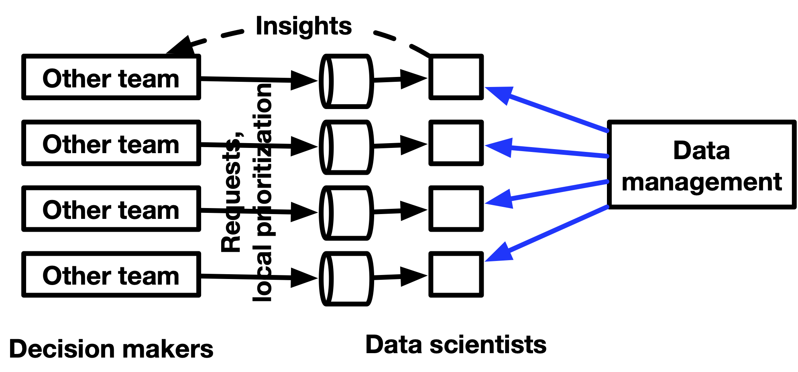- You want analysts or data scientists embedded in departments to report to you, but to have ad-hoc requests by departments to go through them or members of the main data team.
- Avoids bottlenecks where any important but simple analyses don’t have to go through you.
- Also, strong data people want to report into a manager who understands data, not into a business person
- Example: assignments
- data infrastructure, onboarding product team, supply chain team, checkout team, marketing team, support for the CEO and helping with investor/board decks
- Send out an email to a large group of people outlining this change, and make it very clear who people should work with for their data needs.
- As you hire people going forward, you are planning to assign them to different teams throughout the company.
- Mostly product/engineering teams, but in some cases other teams.
- You want analysts or data scientists embedded in departments to report to you, but to have ad-hoc requests by departments to go through them or members of the main data team.
- Within Engineering: in some organizations like LinkedIn, the data team is part of engineering. Having seen a similar setup play out in the past, I think that Data and Engineering teams should work as partners and, therefore, with separate reporting lines. Creating a reporting dynamic between the two might jeopardize the efficiency of the collaboration and distance the Data team from the business.
- Within product: this makes sense when the product is tightly related to data and when the organization relies on data primarily for feature testing and other product analytics use cases.
- Within a business entity: finance or marketing, e.g., This is usually the case for small data teams where the scope and objectives only pertain to this particular team (not recommended for larger companies).
- As an Independent Entity: reporting directly to the CEO or CFO. This makes sense for an organization that has: a. reached a good level of data maturity and company-wide data literacy, and b. a wide variety of well-defined use cases across different business functions, and is considering a “Data as a Product” type of approach catering to various business domains.
{kind=link}
Develop Relationships
- Develop a strong relationship with those who are interested in analytics first. They will be invaluable as your advocates to excutive stakeholders and other more skeptical colleagues.
- Develop a strong relationship with IT so you get some of the technical obstacles removed quickly.
- Opening ports, getting permissions
- Remote access to one of their servers so you can run resource-intensive analytics processes
Create Developement, Staging, and Production Environments
- Development
- Reproducibility
- Enables you to tranfer lockfiles or something similar to colleagues for collaboration
- Resources
- Packages, Libraries
- {renv} - See Renv
- {{poetry}},{{pip-compile-multi}}, etc. - Python, General >> Environments, Python, General >> Dependencies
- Nix
- Develop internal packages
Also see Package Development
Developing packages for your company’s specific use cases increases efficiency
See Building a team of internal R packages | Emily Riederer and VIDEO How to make internal R packages part of your team - RStudio
Functions that get/process data commonly used in most projects
Wrapper functions for connecting to separate databases (See Databases, Relational >> Misc >> Wrapper for db connections)
con_depA <- localDB::connect_databaseA(username = ..., password = ...) con_depB <- localDB::connect_databaseB(username = ..., password = ...) con_Lex <- localDB::connect_databaseLex(username = ..., password = ...)
- Reproducibility
- Security
- Need a secure way to download packages (e.g. remember log4j vulnerability)
- Posit Package Manager - repository management server that allows you download packages while being disconnected from the internet
- Posit Public Package Manager - a free service that provides complete mirrors of CRAN, Bioconductor, and PyPI, including historic package snapshots. It is based on Posit Package Manager, the professional product for teams who need greater control over how they expose R, Python, and Bioconductor packages within their organizations.
- Also {RDepot} for management might be an option
- Staging
- Staging environment should be as close as possible the production environment
- Deployment
- Authentification system - system where a user or user group with permissions is allowed to access your application using a username and password
- Scheduling system - scripts running on a schedule
- Monitoring - alerts you to any errors in the pipeline
Early Projects
- Small companies have limited budgets, so demonstrating frugality and resourcefulness in your early projects may assist you in obtaining more resources in the future
- Set up a meeting with the CEO later that week.
- Your goal is to figure out a few metrics she wants reported on weekly in an automatic email.
- Set up weekly 1:1s with a number of key people across the org that need data.
- Your goal is to find data gaps and opportunities and dispatch them to the data scientists.
- If data is decentralized, create a data warehouse that houses all data
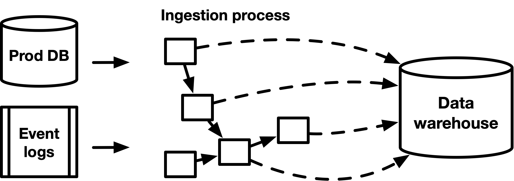- Find analysts or other people in departments that have experience with SQL or are interested in learning it.
- After the data has been centralized, they will then be able to answer some of the ad-hoc data questions for the managers of those departments
- These people may go too far at times but giving them access to the data will be a net positive.
- Find analysts or other people in departments that have experience with SQL or are interested in learning it.
- Create presentations for departments that aren’t data driven
- Example:
- Situation:
- Data team projects for product aren’t being put into production.
- “Product managers put it on the backlog, but they keep pushing it off because other things keep coming up.”
- Product puts features into production without A/B testing, because they’re being “bold” and don’t want to wait for experiments that last months
- No idea if the results of their features are significant or not.
- Data team projects for product aren’t being put into production.
- Product managers are not thinking about data as a tool for building better features
- There is a lack of alignment between what product teams want to build versus what data teams have
- Situation:
- Presention: Showcase many examples of tests with unexpected outcomes from your previous experience, and you make parts of the presentation a bit interactive where the audience has to guess whether test or control won.
- Example:
- Find analyses or queries that are computationally expensive
- Build pipelines to produce “derived” datasets. Once these datasets are built, costs of performing the analyses will be much lower
- Sounds like a job for dbt.
- Build pipelines to produce “derived” datasets. Once these datasets are built, costs of performing the analyses will be much lower
- Work with every department team and make sure they have their own dashboard with the top set of metrics they care about.
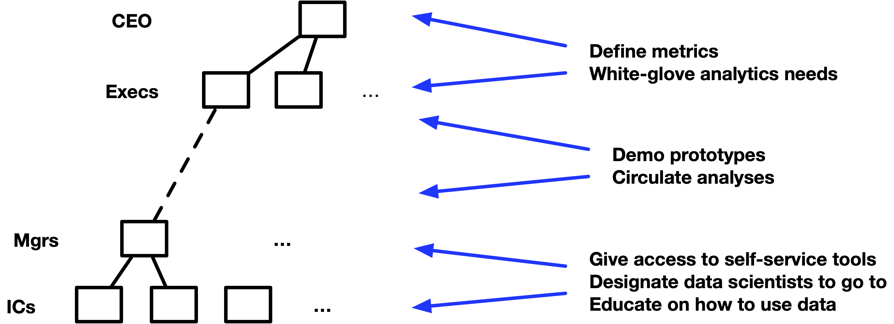- “white-glove analytics” means give special attention (prioritize) to analytics for excecs and CEO.
- Produce something quick initially (establishes respect for your expertise)
- Get a list of the most pressing problems that the executives wanted me to solve.
- Find a relatively small but high-impact problem. (see Project, Planning)
- Nail it and make sure that it is recognized as solving a high-priority problem.
{kind=link}
{kind=link}
Create a Culture
- Limit ad-hoc requests
- e.g. creating one-time reports and pulling data
- See Job, On the Job >> Requests
- Make it clear that automating your pipeline, cleaning up your dashboards, and streamlining your data definitions will have a massive impact in the future
- Create or purchase a ticketing system to manage all incoming requests from other departments in a company (article)
- This will help in managing the workload, and prevent the pressure of stakeholders sending direct emails or ping-ing team members on the requests.
- It needs to manage the lifecycle of every individual request, from submission to resolution
- Prioritizes the most important problems and creates a sense of urgency for the team to focus and solve.
- Form should include:
- Requestor’s team
- Details of the request: what are the data needed? In which format (i.e spreadsheet, dashboard, analytics documents, database table, etc)? What/how the data will be used for?
- Priority/time when the data is needed
- Educate Stakeholders if they’re eager to learn
- Video on navigating the repository (?)
- Simple utilization of the dashboards
- utilizing the filters and interactive parameters to get the data their needs.
- More advanced education can be a workshop on data sources and SQL/querying courses, but this is not mandatory.
- Write clear documentation of all processes and standards
- Without documentation of team practices, losing team members means losing domain knowledge
- With documentation comes team reviews of this documentation. Through reviews, everyone learns something new. The rest of your team will be introduced to new concepts and ideas that will only make your team stronger
- Data documentation
- Knowledge graphs are a paradigm often leveraged by SaaS data solutions that automatically represents data as nodes in a graph, drawing connections via logic and metadata. Knowledge graph-based tools, like lineage, are often automated to help data teams save time and resources when it comes to generating quick documentation about the relationships between and about data across the organization.
- Formalizing service-level agreements (SLAs) and service-level indicators (SLIs), and putting together implicit and explicit contracts between teams can help everyone stay aligned on priorities as you work to meet your goals.
- **See Developing a Data Platform >> Data Observability >> Data Reliability
- Start having code reviews
- Make code reviews a common practice by enforcing them through Github
- Best way everyone can optimize their code
- Tidyteam code review principles
- Knowledge-sharing presentations
- “lunch and learn”
- All about building one another up and using each other as learning opportunities
- Get rid of the pressure of having to do everything in a certain domain
- If one person’s area becomes flooded with tasks, having others with those same skills came lessen the load on one person
- If a person gets sick or leaves, another team member can pick up the slack
Data Literacy
Misc
- Why is it necessary? A recent report from ThoughtSpot and the Harvard Business Review found that successful companies are enabling frontline workers, like customer service representatives and delivery and repair workers, with better data and insights to make good decisions. When workers have that information, the report found, companies have higher rates of customer and employee satisfaction and higher productivity and top-line growth.
- Long process but measureable results can be had within a year
- Data Literacy is not the final goal. Others:
- Data Maturity — easy access throughout the organization to good data
- Also see Data Maturity
- Data-Driven Leadership — Meaning that leaders demonstrate the skills they require of workers
- Data-Driven Decision-Making
- Data Maturity — easy access throughout the organization to good data
Levels
- From Data Literacy Personas
- Data Skeptics : They don’t believe in the value and power of analytics. They see analytics and data as a ‘burden’ to their work. They can derail any Data Literacy project unless carefully nurtured into becoming Data Enthusiasts. A good data awareness program is imperative in turning these skeptics into enthusiasts.
- Data Enthusiasts : They believe in the power of data. They are eager to learn more about how to use data and interpret it in their work. A good Data Literacy program could usher them and the company to new heights toward being data-driven.
- Data Literates : They understand the analytics landscape and can be an active participant in discussions involving data. They are willing to hone up their analytics skills. A good recipe-based analytics program with hands-on practice on the most employed analytics techniques can take them and the company a long way toward being data-driven.
- Citizen Analysts: They are data-driven employees who can solve 80% of their business problems using a structured approach to analytics and, in the process, align the stakeholders as well. They can get to an actionable solution and move the critical metrics for the company. Some Citizen Analysts can also be taught advanced analytics.
- Data Scientists: They are well versed in advanced analytics methodologies. They can solve almost 100% of business problems using analytics. They are adept in using cutting-edge tools like R, Python, and SAS to manipulate data and build models. These Data Scientists are capable of aligning stakeholders toward an actionable solution and excelling at the data-driven decision-making process.
- Data-Driven Executives: They understand the power of analytics, which is the discovery and interpretation of meaningful patterns in data and their application for effective decision making. Data plays an integral role in the decision-making process. They hold their team accountable for their work and can understand when analytics has been executed in the right manner or not.
Create a Data Literacy Plan
- Notes from How to Build Data Literacy at Your Company
- Define data literacy goals, assessing employees’ current skill levels, and laying out appropriate learning paths
- Steps:
- Distinguish between data literacy and technical literacy
- Being able to use a tool and understanding how derive insights from it are two different things
- Literacy ( https://dam-prod.media.mit.edu/x/2016/10/20/Edu_D’Ignazio_52.pdf )
- Read with data, which means understanding what data is and the aspects of the world it represents.
- Work with data, including creating, acquiring, cleaning, and managing it.
- Analyze data, which involves filtering, sorting, aggregating, comparing, and performing other analytic operations on it.
- Argue with data, which means using data to support a larger narrative that is intended to communicate some message or story to a particular audience.
- Start with a baseline of employee skills
- After knowing a baseline, you can develop a plan to upskill employees
- Example survey: https://aryng.com/data-literacy-test
- It’s not that good, but it gives an idea of how it should be formulated
- {shinysurvey} could be used to develop something suitable for a company’s particular business model
- Score and categorize using something like the “levels” (above)
- Use common language
- Using jargon or imprecise terms can create confusion and complicate communication about data.
- Language = Culture
- Build a culture of learning and reward curiosity
- Leaders should make sure to foster an environment that rewards curiosity instead of punishing lack of data literacy.
- If there is a culture of fear rather than of continuous learning and improvement, then people would feel ashamed that they’re not data-literate.
- Don’t punish people for negative data. Confront the brutal facts of the negative data and learn from it. If punishment is the first reaction, then people will try to hide the data or manipulate it – vanity metrics.
- Take into account different learning styles
- Not everyone is suited to a three-hour training classes — some employees learn best with hands-on exercises, while others might like self-led courses
- Track progress and develop metrics
- No real examples of metrics.
- Leadership must be involved
- Chief Data Officers are often the ones in charge of literacy initiatives, but all top executives needs to be on board and modeling the desired results.
- Executives should be part of the program
- Distinguish between data literacy and technical literacy
Developing a Data Driven Organization


- Methods for getting buy-in from stakeholders
- Use your tools and skills to confirm something “obvious” (establish trust) in an accessible (probably visual) way, then use same to show something non-obvious and actionable (establish value).
- Stakeholders need to know what levers to pull that will affect lead indicators before being given metrics that measure those indicators (i.e. the tool or report they’re asking for).
- Lag indicators - The thing you care about but can only measure in hindsight. (e.g monthly sales). They measure success.
- Lead indicators - Things that are predictive of the lag indicators (e.g. site traffic, unit sales, customer webpage behaviour, etc.). Granular aspects of the business.
- Data teams focus on measuring these. Stakeholders take actions based on these indicators to affect the lag indicators.
- These indicators need to continue to be refined.
- If they know what decision they want to make (i.e. levers to pull) and that decision can reasonably generate business value, then tool you create to calculate the metric will be used and used correctly.
- The stakeholder/business user needs to provide an action plan that answers 4 questions
- What result are they influencing with this dataset?
- What do they expect the dataset to look like when it arrives?
- How they will extract answers from this dataset?
- What levers will they move to action on the results?
- Example: “We want to determine the sweet spot for each ad channel spend to get the best ROI for each channel. Once we have the optimal spends for each channel, we’ll adjust our spends and regularly rerun the model to readjust our targets.”
- 2 and 3 (also maybe 1) sound like questions for the data scientist and not necessarily the business user. The dude who wrote this article is a data engineer so I guess he’s writing from that perspective. This list of questions is likely what should be answered by the data scientist and business user before building an expensive pipeline.
- Companies launching data driven initiatives should focus on small areas of primary need first, and advance these areas to a high degree before spreading out.
- Smaller focused areas that produce high quality will increase confidence of stakeholders.
- Starting wide and producing low quality will litter the decision making landscape with false conclusions and conflicting truths. Therefore, decreasing stakeholder confidence
Data Maturity
Misc
- Notes from A Maturity Model for Data Modeling and Design
- A few design decisions may have to be revisited in the maturing phase if proven false with real-life data
- If the end reporting takes a lot longer to create than expected, performance tuning will have to be carried out on an ongoing basis
- A database admin may have requirements to collect statistics on the data
- An entire operating model would be created around this warehouse to ensure it stays fit for purpose.
- Teams using it would need training on how to use it,
- Data governance principles would be applied
- Data quality and the cleansing process would be formalized.
Components
- Also see Databases, Warehouses >> Designing a Warehouse
- Metamodeling:
- Defines how the conceptual, logical, and physical models are consistently linked together.
- Provides a standardized way of defining and describing models and their components (i.e. grammar, vocabulary), which helps ensure consistency and clarity in the development and use of these models.
- Data ownership should be assigned based on a mapping of data domains to the business architecture domains (i.e. market tables to the marketing department?)
- Conceptual Modeling - Involves creating business-oriented views of data that capture the major entities, relationships, and attributes involved in particular domains such as Customers, Employees, and Products.
- Logical Modeling - Involves refining the conceptual model by adding more detail, such as specifying data types, keys, and relationships between entities, and by breaking conceptual domains out into logical attributes, such as Customer Name, Employee Name, and Product SKU.
- Physical Data Modeling - Involves translating the logical data model into specific database schemas that can be implemented on a particular technology platform
Dimensions to Assess Data Maturity Within an Organization
- Strategy — The organization’s overall data modeling strategy, including the alignment of data modeling efforts with business goals and objectives.
- Metamodel - There should be 1 and only 1 meta model in place that is used consistently across the organization
- Physical Models - Should have well-designed and efficient database schemas in place that meet applicable performance and scalability requirements
- People/Talent — The articulation of specific roles and their responsibilities, as well as required expertise, skills, and training.
- Metamodel - There should be a single person with ultimate authority over the metamodel. He or she can take in feedback and collect change requests to ensure it is and stays fit-for-purpose.
- Conceptual & Logical Models - There is a skilled person with core data modeling expertise and the ability to project it onto a real-life business domain to describe it in logical attributes that make sense to the business and technology organization alike.
- Physical Models- Should have people who can design and implement the schemas
- Processes — The processes and workflows, including the documentation of data modeling methodologies, the development of data modeling templates and standards, and the establishment of quality control and review processes.
- Metamodel - There should be description of how the metamodel is to be used in modeling activities which makes work easier as data people have a clear basis to start from.
- Conceptual & Logical Models - The process of creating these models should have an owner and there should be a structured process to create new logical attributes, and to then have them reviewed, approved, and published.
- Physical Models - A data dictionary can also be used to define and standardize the technical details such as data types, constraints, and other database objects.
- Technology — The tools required to support data modeling efforts such data modeling software and tools, and the integration of data modeling tools with other systems and applications.
- Conceptual & Logical Models - There should tools that can provide a visual representation of the models and can support collaboration, version control, and integration with other systems such as a data catalogue or metadata management system. A business glossary can be used to define and standardize the business concepts and terms that are used in the models.
- Physical Models - Should have appropriate technology tools to support schema design and implementation. Database design software can be used to create and maintain physical data models. These tools can generate database schemas from the logical data model and can support collaboration, version control, and integration with other systems such as a data catalogue or metadata management system.
- Adoption — The adoption and usage of data modeling practices within and across the organization. This may include socialization programs, the resolution of barriers to adoption, and the tracking metrics to measure the effectiveness and impact of data modeling efforts.
Tips and Best Practices
- Get the metamodel right first. The metamodel drives reusability and consistency across the entire enterprise. It makes sure that all subsequent modeling efforts incrementally build out the overall model. If you don’t have one in place, you’re up for a gargantuan task of aligning and bridging existing, incompatible models in the future.
- Consider prebaked industry or universal models. Depending on where you are in your journey, you can consider adopting a preexisting data model. This can drive alignment with international best practices and standards, save you time and effort to build a model entirely from scratch, and enable efficient and reliable data exchanges with external parties. For example, BIAN provides a standardized banking services reference model that defines a common language, taxonomy, and business process framework for the banking industry.
- Iterate between conceptual, logical, and physical. Data modeling takes time — the job will never be done. It is recommended to prioritize domains — reference domains like Customers and Products are good candidates—and start with 1 or 2, where you first complete the logical model and then guidelines for the physical model, before you move on to the next domain.
- Don’t overdo the physical. Data modeling can be complex, time-consuming, and therefore expensive. Completing a basic conceptual and logical model is almost always definitely worth the effort, but once venturing into the physical domain, you may not need to centrally direct and capture all of the physical models. You may want to prioritize here as well — for example, identify “mission critical” systems and document physical models for those, but for other ones, it may be sufficient to ensure that local application owners abide by specific modeling norms and standards.
- Strategically implement technology. They can be expensive, and you might not need them for the first domain, but eventually your data models will grow exponentially in terms of their size and complexity. Consider a data catalogue, business glossary, and data dictionary, or something that can serve as all of these. Without it, consumption (and hence value creation) will be poor.
Developing a Data Strategy
Misc
- There is no one path to developing a data strategy since every situation is unique
- Rather than looking at what other companies have done, the key is examining your own needs and prioritizing the best data investments for your company
- Planning
- Planning forces a discussion about prioritization that can lead to key realizations about hiring and resourcing.
- Set three OKRs every quarter that will truly move the needle that align with your company’s bottom line
- Keep your primary goal at the forefront and stay flexible by revisiting your plan often
- Workflow Example: B2C (business-to-consumer) model
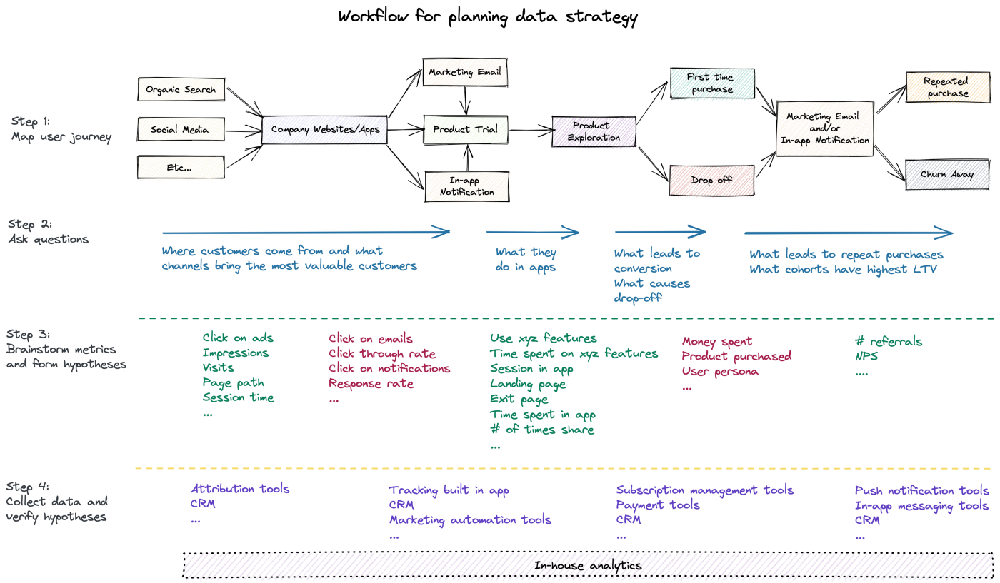
{kind=link}
Objectives and Key Results (OKRs)
- Also see
- OKRs are a framework for turning strategic intent into measurable outcomes for an organization.
- Objectives are written as a set of goals that the company or department wants to achieve over a given time horizon, usually a year. Key Results are quantitative measures that might indicate you’ve reached that Objective.
- Example: a CEO will set goals for acquiring customers and the Chief Marketing Officer in turn will develop the objectives of marketing campaign reach and customer acquisitions that are expressed as the Key Results (outcomes) that will show that these goals have been achieved
- Product outcomes measure a change in customer behavior. Product outcomes help drive business outcomes. Business outcomes measure the health of the business.
- Example: Education Platform
- Business Outcomes:
- Objective: Help more teams adopt “continuous discovery” (her business) as a way of working.
- Key result: Reduce the # of unsold seats in our courses.
- Key result: Sell more books
- Key result: Grow membership by x%
- Product Outcomes:
- Objective: Help members invest in their “discovery habits.” (what she teaches)
- Key result: Increase % of members who interview every week.
- Key result: Increase % of members who assumption test every week
- Key result: Increase % of members who define outcomes every quarte
- Business Outcomes:
- Example: Education Platform
- As OKRs are transparent across the company they can help plug the strategic planning gap.
- Example: The Data division can see what Marketing are trying to achieve and what their intended outcomes will be. The Marketing Data team can plan and see what activities they can help out with. Importantly the Marketing Data team can add in improvement objectives that might make them a better team and provide a better service.
- Test and verify Metrics
- It’s critical to test metrics before using them in OKR, otherwise, metrics may lead to biased investments
- Developing the metrics and means of collection that will be used to measure progress against each OKR.
- Collect data and verify hypotheses with visualization or statistical methods.
- When different stakeholders agree upon metrics, teams can now build a dashboard to monitor how business decisions affect metrics and profits
- Socialize and fine tune the OKRs with the data teams that will be responsible for delivery.
- The data teams will then determine the tasks and activities needed to make the key results happen. How this happens depends on how your company builds products and services. For example in an agile shop this will then lead to story development and sprint planning.
- Review OKRs regularly
- When businesses evolve, so should metrics
Components
Alignment with customer needs
- Data team needs to provide support for the product, marketing, customer services, mobile, website engineering
- Example
- O: Acquire more mobile app customers
- KR: 75% uplift in mobile app downloads
- Data Strategy: Align with functional teams to meet company objectives
- Data OKR: all customer journeys that lead to app store purchases must have metrics collection and analytics to measure progress or drop-out.
Data Platform Technology and Architecture: A plan to build a robust platform of data storage, data feeds, visualisation and modelling tools and a supporting connective infrastructure.
Analytics: An ability to apply models and perform deep analysis on the data that you have.
Democratization of data:
- Making data available where necessary, cataloguing it, making it discoverable and well understood to encourage staff in the company to make effective use of it.
People:
- Hiring and retaining top talent, developing the staff you already have, fostering a culture of technical excellence and collaboration.
- Example
- O: Commit to developing our staff to reduce attrition and skills leaking out
- KR: Staff churn is kept below 10% each quarter
- Data Strategy: Keep our teams technically skilled, engaged and current
- Data OKR: 75% of staff in our data teams successfully complete 3 online technical courses in a year
Compliance/Governance: Remaining compliant with regulatory data requirements and company policies with respect to data collection and usage. Having efficient and transparent processes in place to ensure data teams are applying regulations and policies when developing solutions.
Data Quality and Management: Setting the standards and mechanisms for data to be trusted as it flows through the company.
Security: Keeping in lock step with the enterprise’s broader approach to keeping data and systems safe.
Data Literacy and Culture: Plugging the outputs of models and analytics into the decision fabric of the company. How to take data outcomes and operationalise them, turning them into actions for the business. The promotion of data as a first class concern for the company.
- Example
- O: Data plays a key part of the input to product development
- KR: Use Lifetime Value (LTV) calculations as an input to the product owners who are developing product features to engage higher value customers
- Data Strategy: Improve Data Literacy for Decision Making
- Data OKR: The output of LTV calculations are linked to >200 feature development story points in the product team scrums
- Example
Performing an Organization Assessment
- This assesment will provide the foundation for a data strategy
- This is in the context of a nonprofit organization but the main parts should generalizable
- Mission and Theory of Change
- A concrete outline which states
- The impact that will be generated
- The conditions needed to generate the impact
- The programs in place to create those conditions.
- Each piece of the Theory of Change can then be stated in terms of a quantifiable measure of success which will serve as the starting point for developing a data strategy.
- Example
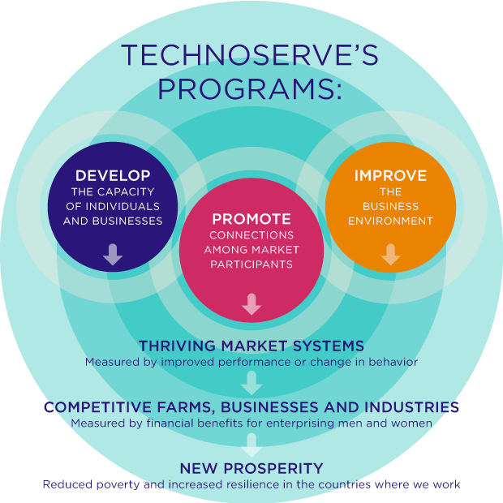
- A concrete outline which states
- Stakeholders
- Answer these questions:
- Who are your stakeholders?
- Identify subgroups and individuals who fall into these groups
- Donors and Volunteers.
- Management and Employees.
- Beneficiaries.
- Identify subgroups and individuals who fall into these groups
- What questions do stakeholders have that can be answered through data?
- Donors and Volunteers
- Example: A data-driven Impact Report which provides a holistic view of how the nonprofit utilizes their resources to achieve its mission.
- Contains anectdotal stories with data that demonstrate how effectively their resources are being used
- Example: A data-driven Impact Report which provides a holistic view of how the nonprofit utilizes their resources to achieve its mission.
- Management and Employees
- Example: More granular views on how individual programs and initiatives are performing on metrics related to their Theory of Change
- Beneficiaries
- Example: Data around how projects in different sectors are performing
- Donors and Volunteers
- How will the data affect stakeholder decision making?
- Donors and Volunteers
- Can influence decisions around donating time and money
- Management and Employees
- Provides visibility into how resources are allocated internally and empowers internal decision makers to evaluate how to get the most impact out of the limited resources they have
- beneficiaries
- Can be used to garner buy in and allow the nonprofit access to communities that they would otherwise not have
- Donors and Volunteers
- Who are your stakeholders?
- Answer these questions:
- Data Gap Analysis
- Identify gaps between current data capabilities and those needed to answer all stakeholder questions
- Contents
- Outline all data needs in the form of questions derived from your Theory of Change and stakeholder analysis.
- Deep dive into the required data to answer the questions and an estimate of how much that data would cost to obtain. Don’t forget that the same data could answer multiple questions.
- Identify data that has already been collected and any existing efforts to collect additional data.
- Connect existing data and data efforts to questions and determine gaps between questions and data.
- Propose strategies to bridge data gaps and sustain data assets. Evaluate both the benefits of answering the question and costs of acquiring the data.
- Prioritize data gaps to close.
- Communicate findings to relevant stakeholders.
{kind=link}
Data Advantage Matrix
- Notes from Data Advantage Matrix: A New Way to Think About Data Strategy
- Systematic way of organizing a data strategy around data investments which will help you build sustainable competitive advantages to outperform your competitors
- These investments won’t necessarily be ones that return the greatest ROI at least in the near-term.
- Matrix Format
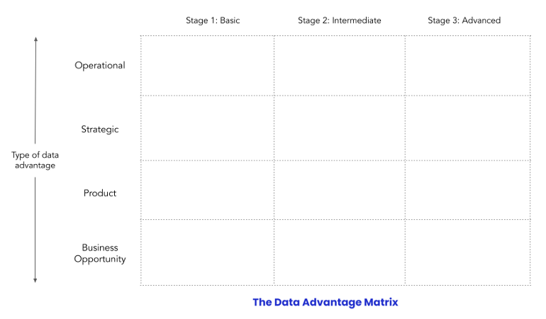- Types (Y-Axis)
- Operational: This is about understanding the levers that drive your business, then using them to improve operations. A key aspect is making data available and understandable to those who are making daily decisions.
- Examples:
- Daily updates about key metrics.
- Is there a drop in conversion rate?
- Are we meeting our KPIs?
- Examples:
- Strategic: Every company makes a few critical strategic decisions each year. The more data-driven these decisions are, the more likely that they will jumpstart growth or success.
- Examples:
- Which cities should we launch in?
- Which customer segments should we focus on?
- How much should we set the price of our product?
- Examples:
- Product: This is when companies leverage data to drive a core product advantage, one that separates them from competitors.
- Examples:
- Gmail’s “smart compose” auto-completion feature.
- Uber’s Supply and Demand Optimization Algorithm
- Examples:
- Business opportunity: This involves using company data to find and create new business opportunities.
- Examples:
- Netflix Originals, where Netflix started to produce its own TV shows and movies based on its data about what people want to watch.
- Telecoms building Know-Your-Customer (KYC) services to monetize that data
- Examples:
- Operational: This is about understanding the levers that drive your business, then using them to improve operations. A key aspect is making data available and understandable to those who are making daily decisions.
- Stages (X-Axis)
- Basic: This is a quick-and-dirty MVP that uses basic tools (e.g. SAAS products, Google Sheets, Zapier) and no data specialists.
- Able to quickly deploy and assess a solution
- Can start at Stage 2 if a data advantage is critical to your company and can be built on proper tooling from the start
- Intermediate: includes investments in data platform tooling and data specialists or teams
- Advanced: includes specialized teams for each use case or project
- Basic: This is a quick-and-dirty MVP that uses basic tools (e.g. SAAS products, Google Sheets, Zapier) and no data specialists.
- Types (Y-Axis)
- Example: SaaS software startup
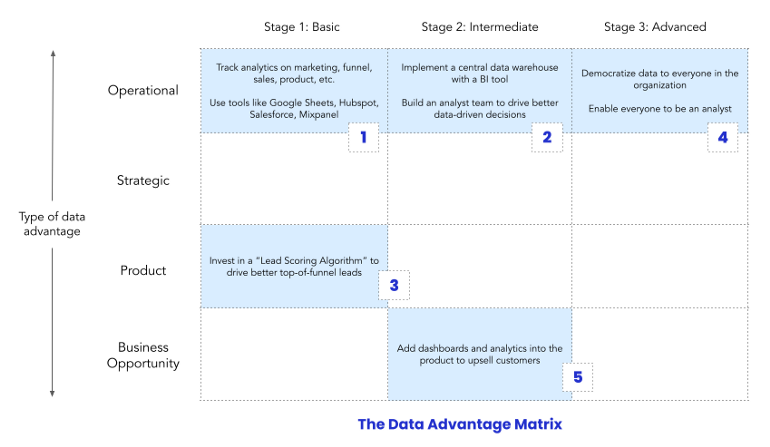 - Example: Uber-like company
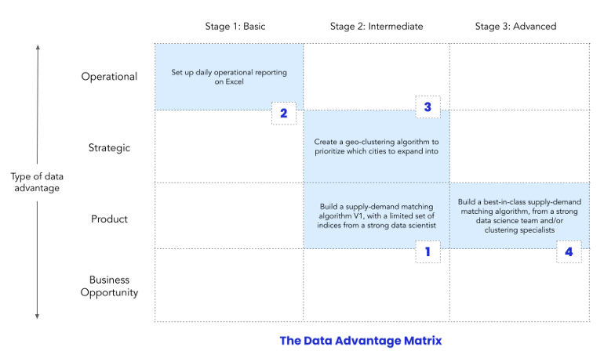
{kind=link}
{kind=link}
{kind=link}
Determining a Data Team’s ROI
- Misc
- Example of model ROI calculation: Domain Knowledge Notebook, Banking/Credit >> Fraud >> Misc
- https://towardsdatascience.com/calculating-the-business-value-of-a-data-science-project-3b282de9be3c
- Visualizing Machine Learning Thresholds to Make Better Business Decisions
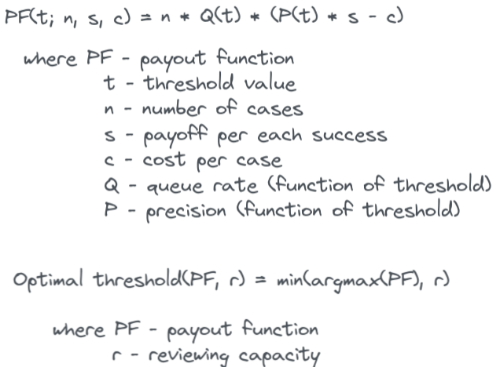- Uses a Telecom subscriptions churn example and incorporates available resources (queue rate) that can review flagged events in order to choose a threshold
- i.e. If you can only review 50 cases, then you model need only flag 50 cases
- Adds uncertainty by using multiple train/test splits and creating quantiles for CIs
- Optimizes resources, costs, precision, and recall to produce a threshold
- Uses a Telecom subscriptions churn example and incorporates available resources (queue rate) that can review flagged events in order to choose a threshold
- The best way is for other department heads to tell it. If there are cutbacks to your team, it should illicit howls from department heads and should be fighting for more data resources.
- For automating tasks, get an estimate of how much time and how many people it takes for that task to be completed during the project’s planning stages.
- Using their salaries, estimate hourly wage and calculate sum(employee_wage * time_spent_on_task)
- After you automate task or make it more efficient, make the same estimation and the difference will be the ROI that data science provided
- Record improvements from baseline or old model to new model using cost function
- Example Metrics
- Cost Reduction: Raw material cost reduction per unit, cost of goods sold per unit, cost of goods manufactured per unit etc.
- Yield Improvement: Percentage of waste/rejection reduced
- Human Time Saving: Reducing manual labor by 30% per day, per batch, per sprint or any other suitable metrics
- Process Improvement: Reduce cycle time by 20 hours, reduce waiting time by 2 hours, reduced exit cycle time by 8%, and minimize the customer return processing time by 6%
- Speed: Reduce time to market by 100 days average delivery time by 10 minutes.
- Quality: Reduction in number of customer returns by 20%, decrease in number of customer complaints by 14%, reduction in warranty calls by 10%, and decrease in number of bugs by 12%
- Market Share: Growth in market share by 5% compared to the previous year for a given brand, geographic region, customer segment or overall consumer base
- Customer Base: Growth in customer base by 6% year over year, increase in average time spent per user session by 10%, increase in customer conversion rate by 25%, and increase in customer retention by 12%
- Applying Metrics
- Schedule meetings with business users to walk through the potential metrics and help decide which ones apply to your project
- Establish baselines for each metric
- If historical data isn’t available, need to work with multiple business teams or users to make assumptions and approximate the raw numbers to come up with the required baseline value
- After a reasonable period (depends on context, e.g. 6 months), calculate the change between the baseline and post-treatment for each metric
- If department heads aren’t willing to go to bat for your team, then examine three areas
- Siloed data teams
- Often data products are only part of the decision making process and when the data teams are separated from other departments it’s difficult to quantize their contribution.
- Example
- When deciding to purchase goods from a supplier, the demand forecast is obviously really important, but so does the allowed pack sizes, the minimum order quantity, the storage finite capacity, etc.
- Example
- Solutions
- Consider changing to an integrated schema, Models for Integrating Data Science Teams Within Organizations like the hybrid “product data science” schema
- Track Decision Impact (DI) metrics ($), which doesn’t focus on intrinsic error (e.g. RMSE, MAE, F1, etc.), but rather on the quality of the decisions made that involved your data product.
- Notes from 10 Reasons to Implement the New Generation of Business Oriented Metrics
- Also see Domain Knowledge Notebook, Logistics >> Decision Impact Metrics
- Example with forecasting
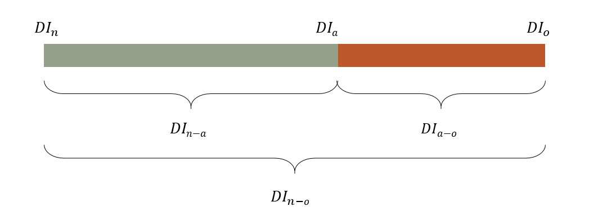- Other viz of these values could include stacked bars, gauges, or areas
- Total range that’s addressable for forecast improvement
- DIn-o = DIn - DIo
- DIn is the cost associated with the decisions made using a prior method or baseline or naive forecast
- DIo is the truth. What are the costs associated with a decision if perfect knowledge were available. Calculate one the future observed values become available
- DIn-o = DIn - DIo
- Added value delivered by the actual forecasting process
- DIn-a = DIn - DIa
- DIa is the cost associated with the decision made using your forecast
- DIn-a = DIn - DIa
- The maximum value that could still be delivered by improving the actual forecast process
- DIa-o = DIa - DIo
- Often data products are only part of the decision making process and when the data teams are separated from other departments it’s difficult to quantize their contribution.
- Planning
- Objectives and key results (OKR) is a goal-setting framework for defining and tracking objectives (O) and their outcomes (KR).
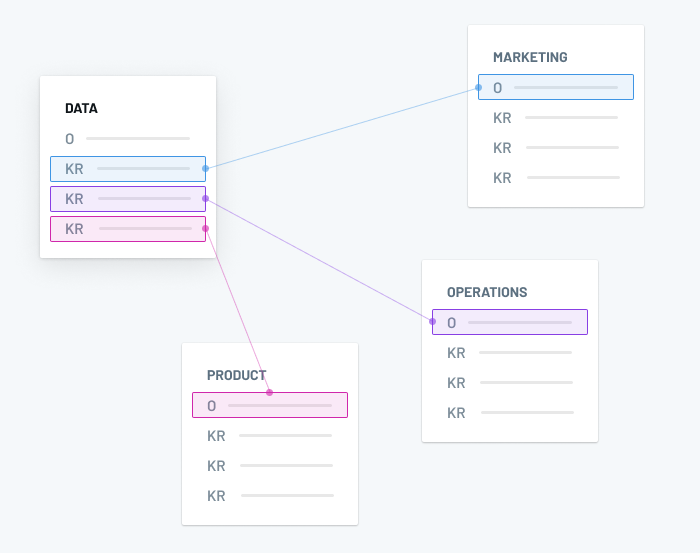- Infrastructure-level objectives — like implementing a new data warehouse — can live separately, but should still have explicit callouts for how those investments are supporting the higher-level objectives.
- Data people should be included in other department planning meetings and stakeholders should be involved in data team meetings where projects are prioritized. Gives them more insight into data team activities.
- e.g. If the Marketing team has a weekly planning meeting or daily stand-ups, the Data analysts supporting that team should be in the room (or Zoom, or whatever).
- Objectives and key results (OKR) is a goal-setting framework for defining and tracking objectives (O) and their outcomes (KR).
- Tools
- Interactive apps (shiny) where stakeholders can run different scenarios can integrate them more into the process
- I think this is fine where applicable, but not to go overboard with it. This dude (article author) also builds these types of platforms and probably was pushing his product a bit.
- Interactive apps (shiny) where stakeholders can run different scenarios can integrate them more into the process
- Siloed data teams
{kind=link}
{kind=link}
{kind=link}
Developing a Data Stack
{kind=link}
- Priority is from top to bottom
Build vs Buy Factors
- Factors for deciding on whether you should build, buy SaaS, or go with Open Source solutions
- The size of your data team
- Unless you a big tech company (e.g. Airbnb), it’s better to go SaaS or Open Source
- Unless you have a large data team, engineers and analysts are too busy to maintain or onboard new ppl on custom tools
- It’s costly and time consuming to build your own unless this is already part of your company’s dna (i.e a tech firm).
- Unless you a big tech company (e.g. Airbnb), it’s better to go SaaS or Open Source
- The amount of data your organization stores and processes
- Select one that will scale with your business
- Your data team’s budget
- Limited budget but many hands, then open source
- Caveats
- Only about 2 percent of projects see growth after their first few years
- i.e. The need to be stabl and actively maintain over an extended period
- Typically on your own, so make sure the project maintainers respond to problems and there’s an active communtiy that uses the tool
- Only about 2 percent of projects see growth after their first few years
- Caveats
- Limited budget but many hands, then open source
Data Ingestion
- Tools
- Ingestion
- Orchestration
- Apache Airflow, Prefect, and Dagster
- See Production, Tools >> Orchestration
Data Storage and Processing
- Snowflake, Google BigQuery, Amazon Redshift, Firebolt, Microsoft Azure, Amazon S3, Databricks, Dremio
- Also see Databases, Lakes, Databases, Warehouses
- Resources
- Choosing Open Wisely - Pros/cons of going open source
Data Transformation and Modeling
- Tools
- dbt – Short for data build tool, is the open source leader for transforming data once it’s loaded into your warehouse.
- Dataform – Now part of the Google Cloud, Dataform allows you to transform raw data from your warehouse into something usable by BI and analytics tools
- Python + Airflow
Business Intelligence and Analytics
- Tools
- Looker – A BI platform that is optimized for big data and allows members of your team to easily collaborate on building reports and dashboards.
- Tableau – Often referred to as a leader in the BI industry, it has an easy-to-use interface.
- Mode – A collaborative data science platform that incorporates SQL, R, Python, and visual analytics in one single UI.
- Power BI – A Microsoft-based tool that easily integrates with Excel and provides self-service analytics for everyone on your team
- R, Python
Data Observability
- Also see Production, ML Monitoring
- Circumstances where it would be a good time to implement this stage:
- Migrating from trusted on-premises systems to the cloud or between cloud providers
- Users of those older systems need to have trust that the new cloud-based technologies are as reliable as the older systems they’ve used in the past
- Your data stack is scaling with more data sources, more tables, and more complexity
- The more moving parts you have, the more likely things are to break unless the proper focus is given to reliability engineering
- Rule of thumb is more than 50 tables
- But if you have fewer and the severity of data downtime for your organization is great, then data observability is still a very sensible investment
- Your data team is growing
- Often leads to changes in data team structures (from centralized to de-centralized), adoption of new processes, and knowledge with data sets living amongst a few early members of the data team.
- Becomes harder for data analysts to discern which tables are being actively managed vs. those that are obsolete
- Technical debt will slowly pile up over time, and your data team will invest a large amount of their time into cleaning up data issues
- Your data team is spending at least 30% of their time firefighting data quality issues
- Your team has more data consumers than you did 1 year ago
- Your company is moving to a self-service analytics model
- i.e. allow every business user to directly access and interact with data
- Data is a key part of the customer value proposition
- i.e. the company starts deriving substantial value from customer-facing applications
- Migrating from trusted on-premises systems to the cloud or between cloud providers
- Must be able to monitor and alert for the following pillars of observability:
- Volume: Has all the data arrived?
- Schema: What is the schema, and how has it changed? Who has made these changes and for what reasons?
- Lineage: For a given data asset, what are the upstream sources and downstream assets which are impacted by it? Who are the people generating this data, and who is relying on it for decision-making?
- Availability: Whether the data is available. Things like network issues or infra issues can prevent users from accessing data.
- Freshness: How up-to-date your data tables are, as well as the rhythm when your tables are updated.
- (In)Completeness:The percentage of unexpected missing data entries, can be both on the row level and column level. For example, is there any row from the upstream tables not being processed? Is there any field in the destination table missing data for > X% of rows?
- Duplicates: The percentage of unexpected duplicated primary key(s).
- Distribution: The accepted range of certain fields. It can be an enumeration or a range of numbers.
- Format: The expected format and schema of the data like CSV, or BigQuery table
- Relationship: Any test on complicated business logic which involves multiple columns or tables.
Data Reliability
{kind=link}
- Also see
- It’s Time to Set SLA, SLO, SLI for Your Data Team — Only 3 Steps for more details on benefits
- SLOs, SLIs, SLAs, oh my—CRE life lessons
- Glossary: DS terms
- SLAs
- It improves the communication between engineers and stakeholders by clearly defining the scope of data reliability and what “okay” and “not okay” means. Making it crystal clear avoids the needless discussion on what does and doesn’t need attention.
- Gives engineers an error budget which is a metric to prevent engineers from burning out and it helps the team allocate their time wisely
- It helps engineers decide how much time should be spent on delivering features and how much time should be spent on making the existing pipelines more reliable.
- It improves the communication between engineers and stakeholders by clearly defining the scope of data reliability and what “okay” and “not okay” means. Making it crystal clear avoids the needless discussion on what does and doesn’t need attention.
- SLOs
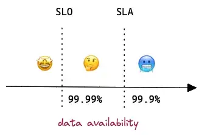- If data availability threshold is set to 99.9% in SLA, then it should be 99.99% in SLO.
- If a service breaks SLO, on-call engineers need to react quickly to avoid it breaking SLA, otherwise, the company (or the team) will lose money (or reputation).
- To achieve overall availability 99.9%, the team needs to monitor the up-time of a few internal tools and each of them has its own SLO threshold.
- SLIs
- Metrics in the monitoring system
- Your SLIs will depend on your specific use case, but here are a few metrics used to measure data trust, a common KPI:
- The number of data incidents for a particular data asset (N). Although this may be beyond your control, given that you likely rely on external data sources, it’s still an important driver of data downtime and usually worth measuring.
- Time-to-detection (TTD): When an issue arises, this metric quantifies how quickly your team is alerted. If you don’t have proper detection and alerting methods in place, this could be measured in weeks or even months. “Silent errors” made by bad data can result in costly decisions, with repercussions for both your company and your customers.
- Time-to-resolution (TTR): When your team is alerted to an issue, this measures how quickly you were able to resolve it.
- Steps
- Create the SLA with your stakeholders
- Define what reliable data means together with your stakeholders
- Data engineers can assess the historical performance of the data to gain a baseline and understand its usage pattern, what fields are mostly queried, and at what frequency
- What do stakeholders care about the most? Freshness? Accuracy? Availability? Duplicates?
- Start low so engineers don’t need to run 24/7 rotations and stakeholders are typically ok with a few hours of downtime initially (99% = ~1.68 hours downtime per week). As the situation gets more stable, you can increase it to the ideal number. (99.99% = few minutes downtime per month)
- Example: Critical Revenue Table on BigQuery
- Availability 99.9%: Table should always be accessible.
- Availability has a higher SLA because it mostly relies on BigQuery service which promises 99.99% up-time.
- Freshness 99%: Table should be refreshed daily before 9 am with yesterday’s revenue.
- Uniqueness 99%: Table shouldn’t contain any duplication on the composite key.
- Correctness 99%: Amount fields like gross_booking, net_booking, net_revenue should be calculated correctly.
- Availability 99.9%: Table should always be accessible.
- Define what reliable data means together with your stakeholders
- Select SLIs
- Select metrics that will help you meet the terms of the SLA
- The selection of indicators is very specific to the data infrastructure the team is using
- Example: Airflow + BigQuery + dbt to deliver data
- Availability: Seconds since the latest heartbeat (i.e. timestamp emitted by a job) from Airflow
- The downtime of Airflow doesn’t have a direct impact on the BigQuery table’s availability, but as mentioned previously, it’s worth monitoring internal tools which contribute to the final SLA.
- Freshness: Hours since the table was updated last time.
- Uniqueness: The test result of the uniqueness test in dbt.
- Correctness: The test result of other value checking in dbt.
- Availability: Seconds since the latest heartbeat (i.e. timestamp emitted by a job) from Airflow
- Define the SLO and set up alerts
- Set the internally acceptable range of failure per indicator.
- To give on-call engineers enough reaction time before there’s a violation of the SLA, the SLO should be more strict than the SLA.
- Create alerting rules and rate incidents by the level of severity.
- Can display on a dashboard, making it effective to communicate and resolve the issue
- Example: See SLO and SLI examples
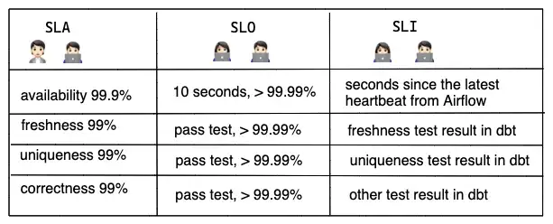 - The services you use will have dependencies, so you’ll need to take them into account when defining your SLOs
- Create the SLA with your stakeholders
Data Discovery
- Need a reliable, scalable way to document and understand critical data assets
- Features
- Self-service discovery and automation
- Data teams should be able to easily leverage their data catalog without a dedicated support team.
- Greater accessibility naturally leads to increased data adoption, reducing the load for your data engineering team.
- Scalability as data evolves
- Real-time visibility into data health
- Unlike a traditional data catalog, data discovery provides real-time visibility into the data’s current state, as opposed to its “cataloged” or ideal state.
- Glean insights such as which data sets are outdated and can be deprecated, whether a given data set is production-quality, or when a given table was last updated.
- Support for governance and warehouse/lake optimization: From a governance perspective, querying and processing data in the lake often occurs using a variety of tools and technologies (Spark on Databricks for this, Presto on EMR for that, etc.), and as a result, there often isn’t a single, reliable source of truth for reads and writes (like a warehouse provides). A proper data discovery tool can serve as that central source of truth.
- Self-service discovery and automation
Developing an On-Call Environment
Misc
Create Table of Production Issues
{kind=link}
- The more detailed the guideline, the more streamlined the on-call process will be.
Create a Workflow
{kind=link}
- On-call workflow tells engineers how to approach a variety of production requests in a consistent manner.
- More preparation means fewer decisions we have to make on the spot, leading to fewer mistakes.
- Main Steps
- Define the sources of alerts. Redirect all production issues into one or two channels. For example, use Slack integration to redirect pipeline issues, infrastructure failures, and test failures into a centralized Slack channel for easy tracking.
- Identify the category of alerts, the scale of the impact, and its urgency. Every on-call should be able to assess the urgency of the issue based on its category, impact, and SLA requirements. By creating “data products” with clear requirements, teams can benefit from the process that enables them to identify the impact and urgency efficiently. I recommend article — Writing data product pipelines with Airflow, a nice practice to write data requirements as code in Airflow dags.
- Identify the root cause and solve the issue. When an urgent issue arises, on-call should do their best to find the root cause and solve the issue. However, not every data engineer knows all the nitty-gritty of data models maintained by data analysts. In such situations, following an escalation pattern can be helpful. It allows engineers to ask for help from other engineers or analysts with necessary expertise until the issue is resolved.
- Perform post-incident actions and update the on-call journal. Don’t forget to perform post-incident actions like backfilling to correct historical data for incremental models. It’s also recommended to keep an on-call journal for knowledge sharing.
- User communication. In a parallel thread, it’s important to keep users in the loop. Effective communication during the “data downtime” builds trust between the data team and users. One of my articles — Status Page for Data Products — We All Need One introduces the status page as a method to improve effective communications during data downtime.
On-call ownership
- Clearly, engineers are responsible for technical failures, but when it comes to data model failure, ownership becomes controversial.
- Options
- Assign an owner to each data model as much as you can. Simply assigning an owner to the model tremendously improves efficiency during on-call.
- Treat data model owners as “external parties”. It’s not uncommon that software relies on an external party that is outside of engineers’ control such as an IoT service that relies on a network provider. Similarly, data engineers may need to work with model owners who are outside of their immediate team to address the model failures. When external knowledge is required, engineers should feel comfortable reaching out and proactively working with them while informing users of the progress. Do not put stress on on-call engineers by expecting them to solve issues on their own.
On-call rotation
- Schedule
- Can use spreadsheets to manage rotation schedules and a cron job to propagate the schedule into a calendar in near real-time. (e.g. Google Sheets + Apps Script + Google Calendar)
- Platforms ($): Opsgenie and PagerDuty
- Permissions
- On-Call engineers may need additional permissions at times
- Options
- Perform a permission escalation, temporarily granting the engineer additional privileges.
- Create a high-privileged user group and rotate group members.
- Essential to ensure that the rotation of the group members must be in sync with the on-call calendar rotation.
Communication channels
- Finding the right balance between being informed and not being overwhelmed by alerts is crucial
- Centralized data alerts channel (alerts -> team)
- By having a dedicated channel where all alerts are sent, it becomes easier to monitor and manage alerts, reducing the risk of critical information being missed or overlooked
- Slack is a popular choice because it can easily integrate with various data sources such as Opsgenie, GCP Cloud logging, Sentry, service desk, etc.
- Escalation policies (team -> team)
- A set of procedures that outlines how an organization will respond to issues that require additional resources beyond the initial response.
- User communication (team -> users)
- Needs to start as soon as the issue is identified. Keeping the channel centralized by setting up a tool like status page.
On-call runbook
- A set of instructions that on-call can follow when responding to issues.
- Must be regularly updated to reflect the changes.
- Components
- Metadata around the data product: owner, model incrementality, priority, schedule, SLA, and SLO.
- Escalation procedures (if not handled automatically).
- Troubleshooting guides: how to solve common issues. For example, perform full-refresh, check source data, logs, data observability tools and etc.
- Post-incident verification: how to verify if the issue is properly solved. For a cron job, the issue can only be verified in the next run which can be a few hours or days later.
On-call journal
{kind=link}
- Tool for documenting production issues
- Helps engineers who look for tested solutions and managers who search for trends.
- A templated journal ensures engineers approached each issue with the same scientific rigor.
- Each record includes intensive metadata around the issues and the in-depth investigation and what they did to fix the issue.